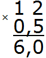
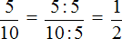
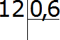

Десятичные дроби имеют широкий спектр применения. Они применяются в экономике, медицине, машиностроении и во многих других отраслях. В данном уроке мы рассмотрим некоторые элементарные операции, которые могут пригодиться в будущем.
Содержание урока- Сравнение десятичных дробей
- Нахождение десятичной дроби от числа
- Нахождение числа по десятичной дроби
Сравнение десятичных дробей
Чтобы сравнить две десятичные дроби, нужно в обеих дробях сделать количество цифр после запятой одинаковым, приписáв к одной из них нули. Затем отбросить запятые в обеих дробях и сравнить получившиеся числа.
Например, сравним дроби 5,345 и 5,36. В первой дроби после запятой три цифры, а во второй только две. В конце второй дроби нужно приписать ещё один ноль, чтобы количество цифр после запятой в обеих дробях стало одинаковым.
Припишем в конце второй дроби ноль, тогда получим дроби 5,345 и 5,360. Теперь отбросим запятые в обеих дробях, получим 5345 и 5360. Ну и сравниваем их как обычные числа. 5345 меньше, чем 5360
\[5345 < 5360\]
Значит и дробь 5,345 меньше, чем дробь 5,36
\[5,345 < 5,36\]
Пример 2. Сравнить десятичные дроби 6,782 и 6,71
Сделаем количество цифр в обеих дробях одинаковым:
6,782
6,710
Отбросим запятые:
6782
6710
6782 больше, чем 6710
\[6782 > 6710\]
Значит и дробь 6,782 больше, чем дробь 6,71
\[6,782 > 6,71\]
Нахождение десятичной дроби от числа
В прошлых уроках мы находили обыкновенную дробь от числа. Для этого мы делили число на знаменатель дроби и полученный результат умножáли на числитель дроби.
Например, чтобы найти \(\frac{2}{3}\) от числа 9, нужно число 9 разделить на знаменатель дроби \(\frac{2}{3}\) и полученный результат умножить на числитель этой же дроби
\[9 : 3 = 3 3 \times 2 = 6\]
Значит \(\frac{2}{3}\) от числа 9 составляет 6.
Но находить можно и десятичные дроби от числа. Нахождение десятичной дроби от числа намного проще. Чтобы найти десятичную дробь от числа, достаточно это число умножить на данную дробь.
Например, найдём 0,5 от числа 12. Чтобы найти 0,5 от числа 12, достаточно умножить 12 на 0,5

Получили ответ 6. Значит 0,5 от числа 12 составляет число 6.
Проверим правильно ли мы нашли 0,5 от числа 12. Сначала переведём десятичную дробь 0,5 в обыкновенную дробь. 0,5 это ноль целых и пять десятых. Ноль не пишем, а записываем сразу пять десятых:
\(\frac{5}{10}\)
Cделаем эту дробь более простой для нашей работы. Для этого сократим её на 5

Получили дробь \(\frac{1}{2}\) . Теперь находим \(\frac{1}{2}\) от числа 12. Нетрудно догадаться, что \(\frac{1}{2}\) от числа 12 это число 6. Значит и десятичная дробь 0,5 от числа 12 была найдена правильно.
Пример 2. Найти 0,4 от одного метра
Один метр это 100 см. Чтобы найти 0,4 от 100 см, нужно 100 см умножить на 0,4. А чтобы умножить 100 см на 0,4 нужно в 0,4 перенести запятую вправо на две цифры:
\[100 \times 0,4 = 40\]
Значит 0,4 от одного метра составляют 40 см.
Десятичную дробь также можно найти от десятичной дроби. Например, найдем 0,5 от 2,5. Для этого 2,5 нужно умножить на 0,5
\[2,5 \times 0,5 = 1,25\]
Нахождение числа по десятичной дроби
В прошлых уроках мы находили число по обыкновенной дроби. Чтобы найти всё число по его дроби мы делили известное число на числитель дроби и полученный результат умножали на знаменатель дроби.
Например, если \(\frac{2}{4}\) числа составляет 6, то для нахождения всего числа, нужно 6 разделить на 2 и полученный результат умножить на 4
\[6 : 2 = 3\]
\[3 \times 4 = 12\]
Значит если всё число равно 12.
Находить число можно и по десятичной дроби. Нахождение числа по десятичной дроби намного проще. Чтобы найти число по десятичной дроби, достаточно это число разделить на данную дробь.
Пример 1. 0,6 всего числа составляет 12, найти всё число. Чтобы найти всё число, достаточно 12 разделить на 0,6.

Чтобы разделить 12 на 0,6 нужно в делимом и в делителе перенести запятую вправо на одну цифру. Тогда получим выражение 120 : 6. А это выражение вычисляется легко:
\[120 : 6 = 20\]
Значит, если 0,6 всего числа составляет 12, то всё число это 20.
Пример 2. Велосипедист проехал 3 км, что составляет 0,2 всего пути, который должен проехать велосипедист. Какой путь должен проехать велосипедист?
Если 0,2 всего пути составляют 3 км, то для того чтобы найти весь путь, нужно 3 разделить на 0,2. Чтобы разделить число 3 на 0,2 нужно в делимом и в делителе перенести запятую вправо на одну цифру. Тогда получим выражение 30 : 2. А это выражение вычисляется легко:
\[30 : 2 = 15\]
Значит весь путь, который должен проехать велосипедист составляет 15 км.
Понравился урок?
Вступай в нашу новую группу Вконтакте и начни получать уведомления о новых уроках
Возникло желание поддержать проект?
Используй кнопку ниже